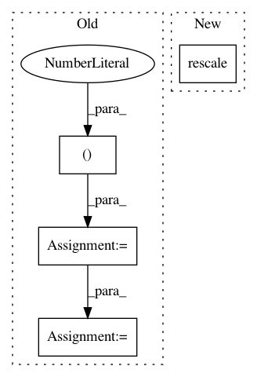

47c8e9c89f0fea96066d87cd5152834ab4a04132,openTSNE/initialization.py,,pca,#Any#Any#Any#Any#Any#,38
Before Change
embedding = pca_.fit_transform(X)
// The PCA embedding may have high variance, which leads to poor convergence
normalization = np.std(embedding[:, 0])
normalization /= 0.0001
embedding /= normalization
timer.__exit__()
After Change
n_components=n_components, svd_solver=svd_solver, random_state=random_state
)
embedding = pca_.fit_transform(X)
rescale(embedding, inplace=True)
timer.__exit__()
return np.ascontiguousarray(embedding)
In pattern: SUPERPATTERN
Frequency: 4
Non-data size: 4
Instances
Project Name: pavlin-policar/openTSNE
Commit Name: 47c8e9c89f0fea96066d87cd5152834ab4a04132
Time: 2020-05-04
Author: pavlin.g.p@gmail.com
File Name: openTSNE/initialization.py
Class Name:
Method Name: pca
Project Name: CellProfiler/CellProfiler
Commit Name: 404a8aa3629103140b364ebc69a80f7271af0f04
Time: 2016-12-01
Author: mcquin@broadinstitute.org
File Name: cellprofiler/modules/rescaleintensity.py
Class Name: RescaleIntensity
Method Name: manual_input_range
Project Name: CellProfiler/CellProfiler
Commit Name: 404a8aa3629103140b364ebc69a80f7271af0f04
Time: 2016-12-01
Author: mcquin@broadinstitute.org
File Name: cellprofiler/modules/rescaleintensity.py
Class Name: RescaleIntensity
Method Name: stretch
Project Name: pavlin-policar/openTSNE
Commit Name: 47c8e9c89f0fea96066d87cd5152834ab4a04132
Time: 2020-05-04
Author: pavlin.g.p@gmail.com
File Name: openTSNE/initialization.py
Class Name:
Method Name: spectral